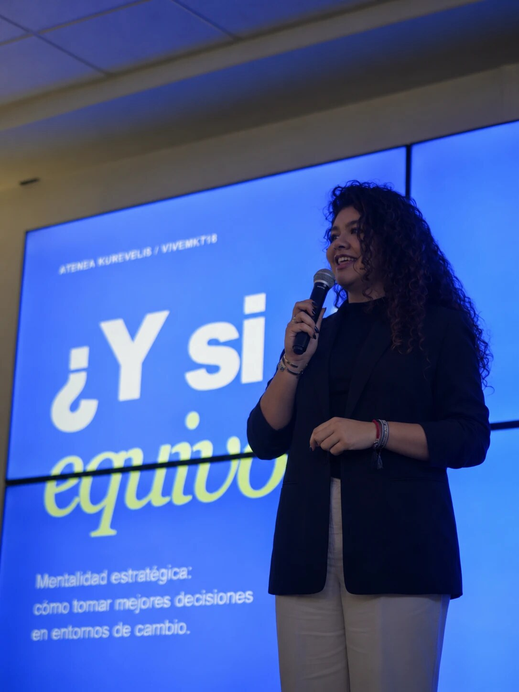
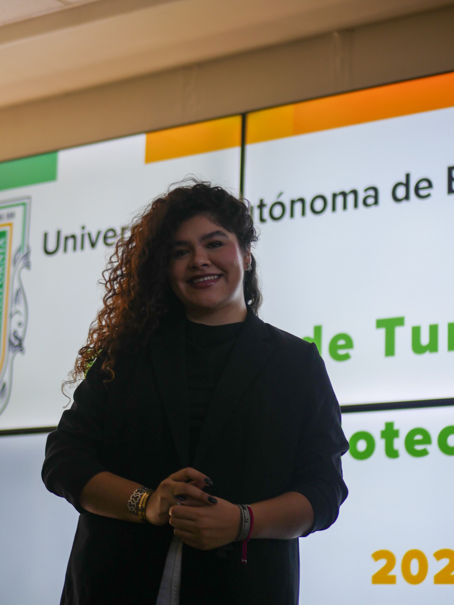
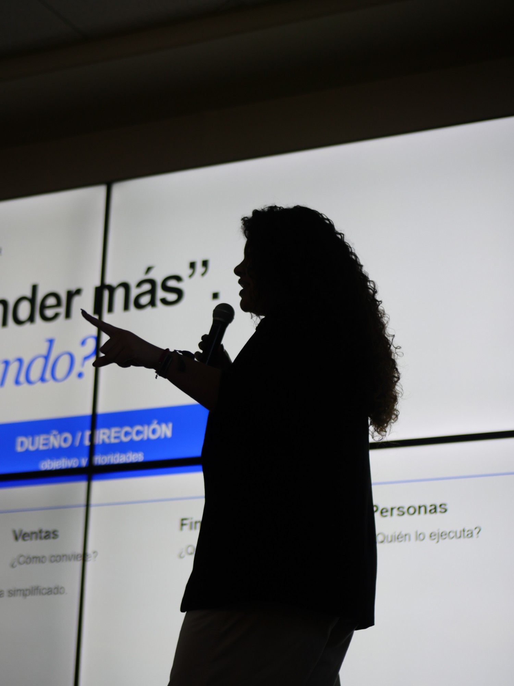
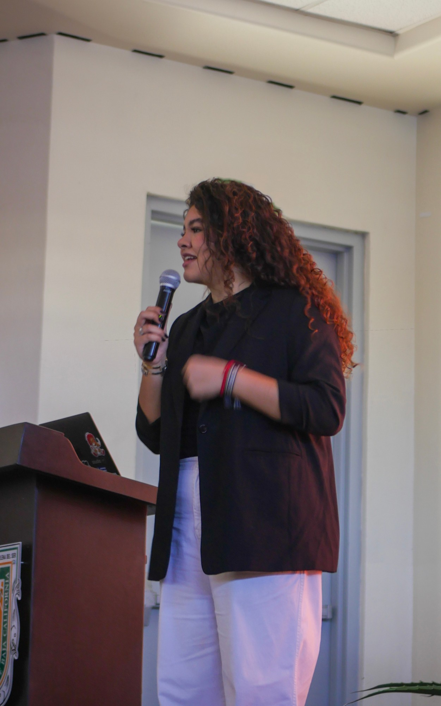

Cómo decidir cuando no tienes todas las respuestas.
Una conferencia y un taller de mentalidad estratégica para estudiantes.


Atenea tiene 25 años. Fue voleibolista de alto rendimiento con beca en el Tec de Monterrey, donde estudió Mercadotecnia, y hoy dirige MÉTODO, una consultoría de estrategia comercial. Aprendió a decidir bajo presión en la cancha, y hoy lo hace con dueños de negocio que tienen dinero, equipos y clientes en juego. Eso es lo que lleva al escenario: criterio práctico, no motivación vacía.
Muchos estudiantes no se frenan por falta de ideas, sino por miedo a elegir mal. Esta conferencia les da herramientas para decidir con criterio aunque haya incertidumbre, desde la vida personal hasta el trabajo con negocios reales.
Reconocer lo que nos congela y distinguir un límite real de una excusa.
Dirección propia, en qué respaldar una decisión y a quién escuchar.
Diagnóstico, marketing deportivo en tiempo real e IA como herramienta, con casos de más de 50 empresas.
Una dinámica en equipo y una herramienta que se llevan para seguir practicando.
La versión completa: historia, casos reales y una dinámica breve con todo el auditorio.
PROBADA EN VIVEMKT18La conferencia en versión práctica: los equipos arman un modelo de negocio en 20 minutos y lo presentan.
Las mismas herramientas aplicadas a elegir carrera y rumbo, con un lenguaje cercano a su edad.
Versión breve con un solo caso, para públicos de cualquier carrera.
La ruleta de posibilidades combina una oferta, un público y una restricción al azar. Por equipos y contra reloj, los estudiantes encuentran una necesidad real, diseñan una propuesta y definen cómo comprobarla. Al final presentan su idea y reciben retroalimentación como si fueran clientes de una consultoría.
Ejemplo: remolque vehicular × personas con gatos × solo puedes vender por WhatsApp.


Sinceramente fue la mejor del congreso. Si algún día das más conferencias o eventos, me encantaría estar.
Sofi · Estudiante, VIVEMKT18No me arrepiento para nada en haber elegido tu taller, aprendí mucho la verdad.
Estudiante, VIVEMKT18Me ayudó a ver de otra manera la toma de riesgos, ya no solo como mercadólogos sino también como persona.
Estudiante, VIVEMKT18Muchas anotaciones… Recordé cuando inicié mi pequeño emprendimiento con solo $200 pesos, y con los consejos que diste en la plática de hoy, poder implementarlos.
Estudiante emprendedor, VIVEMKT18Gracias por tomarte el tiempo de contarnos desde tu experiencia en el mundo real. Hoy me llevo algo nuevo y algo que inspira.
Estudiante, VIVEMKT18Tus palabras llegaron a una parte profunda de mí y me inspiraron.
Estudiante, VIVEMKT18Llamada de 20 minutos para adaptar el contenido a su público, y un video corto de invitación para sus redes.
Conferencia o taller con dinámica, hoja de trabajo y sesión de preguntas.
Encuesta breve por QR y un reporte de impacto de una página para su coordinación: asistencia, calificación, aprendizajes y fotos.
Honorarios según formato y modalidad. Los viáticos se cotizan aparte para eventos fuera de Tijuana.